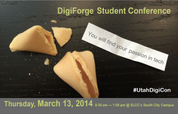

News
DigiForge Technology Conference
February 9, 2015 by Mr. Kapptie
Thursday, March 19, 2015 8:00 am - 12:30 pm @ SLCC's South City Campus
Let’s do some math. In 2013, only 61 students in Utah took the AP Computer Science test. That same year, 35,721 AP tests were taken in Utah. So for every 585 AP tests taken, only 1 AP CS test was taken. Ok, you get the point. Clearly we have some work to do to get more students into tech. The good news is that on March 13, 2014, over 600 students will attend the DigiForge Student Conference, aka #UtahDigiCon. This conference will expose more students to technology learning, hopefully igniting their interest in technology careers. Cydni Tetro, Entrepreneur-in-Residence at Disney, will be the keynote speaker. She also co-founded Women Tech Council.
DigiForge Student Conference 2014 will include topics on
The students can attend three different interactive sessions and see the latest and greatest in technology. High school students in Canyons, Granite, Jordan, Murray, Salt Lake, Tooele School Districts welcome.
The students can attend three different interactive sessions and see the latest and greatest in technology. High school students in Canyons, Granite, Jordan, Murray, Salt Lake, Tooele School Districts welcome.
REGISTRATION NOW OPEN, CLICK HERE

TSA State Conference is Coming Up Fast
March 12, 2015 by Alexei Garcia
Date: March 18th, 2015
Location: Davis Applied Technology College 550 East 300 South Kaysville, Utah
Hey Skyline! TSA state conference is just around the corner. March 18th to be exact. Here's hoping you're ready to go and have all your competitions done. If not, well, have fun cramming it all in this last week. The day is promising to be an exciting event full of technology, new ideas, and most important, new people to meet who are just like you. Remember to go to Mr. Kapptie's Room to confirm your competitions and to pick up your schedule. Also the bus scheduled for us will be leaving at 6:30 am from the South Parking Lot. SO BE THERE!!! This year is shaping up to be one of the most difficult but through adversity, Skyline TSA members really shine.
Calvin Nielson to Host Rubic's Competition
March 3, 2015 by Alexei Garcia
Skyline sophomore Calvin Nielson will be hosting Rubic's Cube Competition on π Day (Pi Day). Come show off your mad rubic's cubing skills and impress hundreds of spectators.
Utah Open 2015 Date: March 14, 2015 (Pi Day)
Location: University of Utah, Warnock Engineering Building, 1230 72 Central Campus Drive Salt Lake City,... [Read More]

Women in Technology
January 14, 2015 by Mr Kapptie

Come to a free NumFocus event at the UofU! See flyer for details…
Hour of Code is Here!
December 8, 2014 by Mr Kapptie
All this week, Skyline students are invited to participate in the Hour of Code event. This event is designed to expose computer science principles to students of all ages. Go anytime to the Media Center on Wednesday December 10th to learn more and receive a sticker for participating!
Skyline programming students start with the Processing Environment | its free, its fun | you can create amazing things RIGHT NOW!
$149 Computer System
December 4, 2014 by Mr Kapptie
The National School Lunch Program and Comcast are providing a complete computer system for eligible families with K-12 students. Check your eligibility here!
Choose from a family-oriented desktop or mobile-friendly laptop. Both options include Microsoft® Office, a 90-day limited warranty and all the hardware needed to connect to the Internet right out of the box - so you and your family can enjoy the benefits of having the Internet at home.
This exclusive offer is available to Internet Essentials customers only.
TSA Leadership Conference
October 15, 2014 by Mr. Kapptie
The leaders of the newly formed Skyline TSA Chapter, attended their fall leadership conference this last week. Students were able to see many facets of the organization including the exciting world of VEX Robotics.

Future VEX competitors showing off their competition robot.

Actual samples of this year's competition materials.

Games while we wait for the State Officers.
Skyline Creates TSA Chapter
September 16, 2014 by Mr Kapptie
What is TSA? Join the team that earned 6 awards at Nationals!
The 2015 competitions have been posted.
Questions? See us at EagleFest or Contact Mr Kapptie in 303…